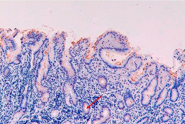

Vraag 1
Bekende oorzaken voor ondervoeding bij ouderen zijn:
Vraag 2
Een 65-jarige vrouw komt bij je in de huisartspraktijk. De voorgeschiedenis vermeldt diabetes mellitus type 2. Zij heeft last van coxartrose en gebruikt hiervoor al Paracetamol 3dd 1000mg. Deze pijnstilling acht je onvoldoende.
Welke farmacotherapeutische interventie gericht op de pijn doe je?
Welke farmacotherapeutische interventie gericht op de pijn doe je?
Vraag 3
Wat zijn bekende oorzaken voor ondervoeding bij ouderen?
Vraag 4
Op de afbeelding zie je een histologisch biopt van een H. Pylori gastritis. Welke structuur wordt bij de pijl aangegeven?

Vraag 5
Een 32-jarige vrouw, met diabetes mellitus type I, gebruikt gedurende 12 jaar orale anticonceptie. Zij heeft klachten van pijn in de rechter bovenbuik en op een CT abdomen wordt een 5 cm grote lesie in de rechter leverhelft gezien. De radioloog vindt dit passen bij een adenoom. Wat adviseer je deze patiënte?
Vraag 6
Een Helicobacter pylori infectie verhoogt bepaalde vormen van kanker. Welke type carcinoom is hiermee geassocieerd?
Vraag 7
Een 54 jarige man, bekend met diabetes mellitus type 2, presenteert zich op de Spoedeisende Hulp in verband met pancreatitis. Wat is op basis van de epidemiologie de meest waarschijnlijke oorzaak? Plaats in de juiste volgorde van meest naar minst frequent: galstenen, alcohol, e.c.i., metformine gebruik.
Modelantwoord
Volgorde van meest naar minst frequent:
1. galstenen
2. alcohol
3. e.c.i. (idiopathisch)
4. metformine gebruik
Galstenen en alcohol zijn de twee meest voorkomende oorzaken van acute pancreatitis; idiopathisch (e.c.i.) volgt daarna. Metformine is geen relevante oorzaak van pancreatitis.